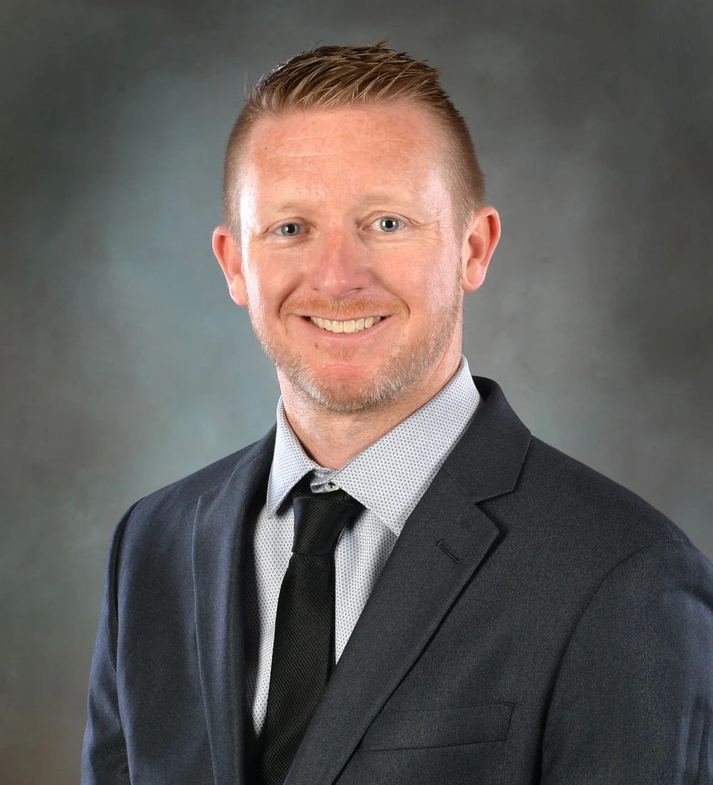
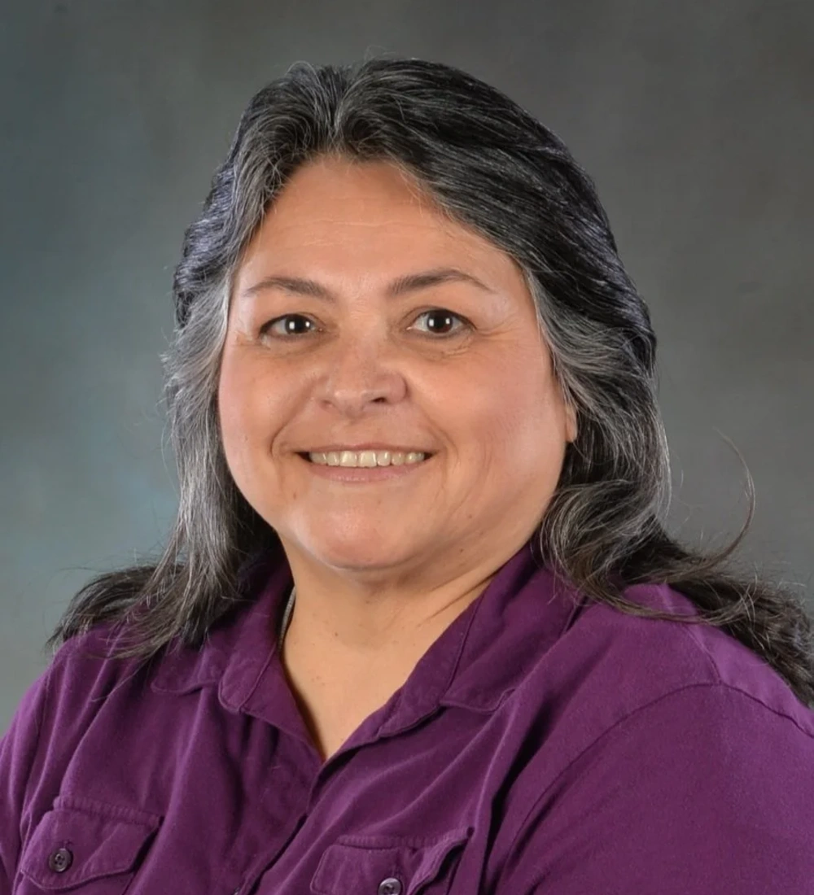
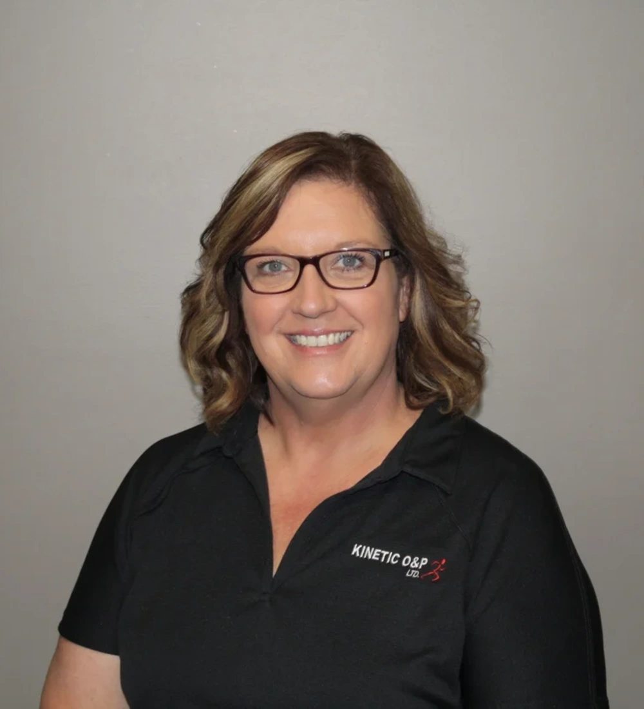
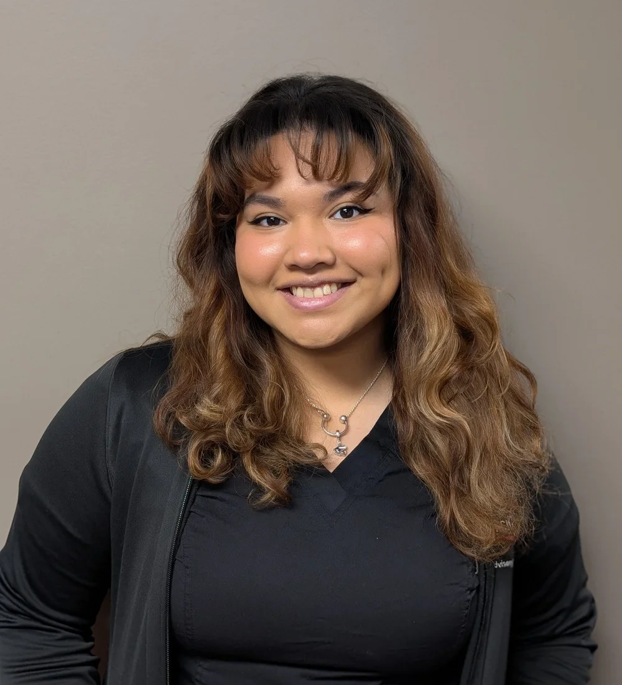
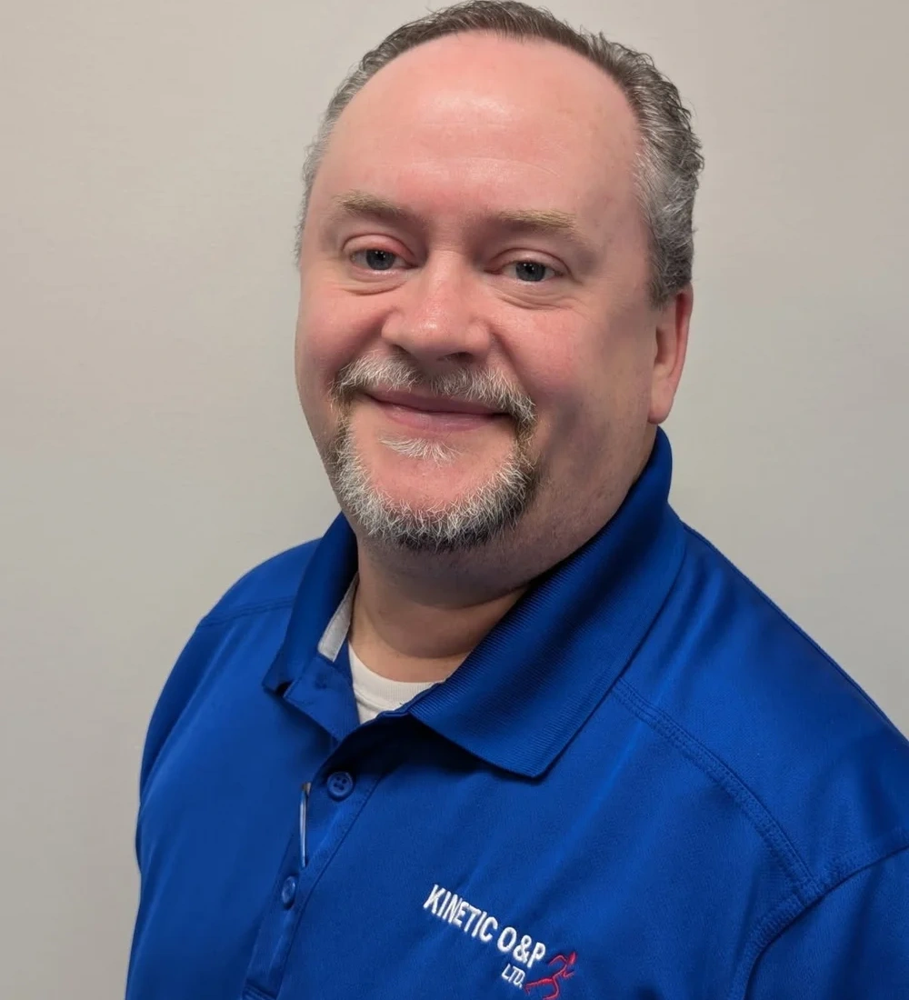
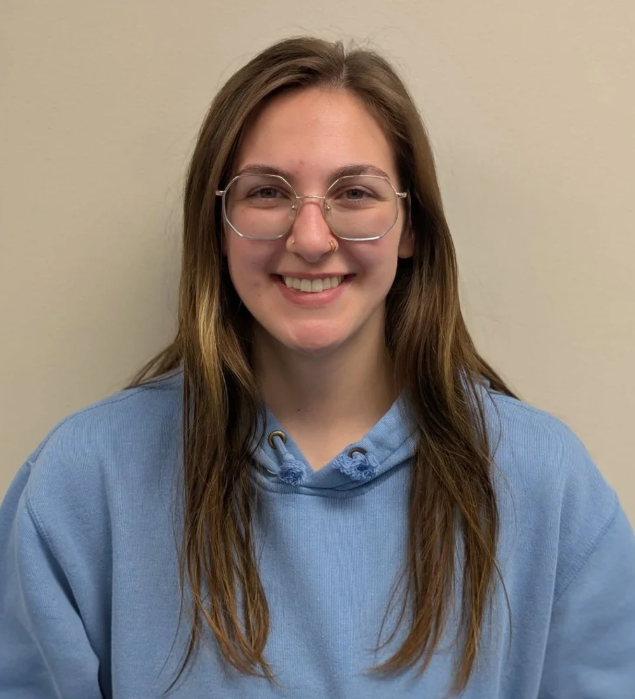

Our Story
Kinetic O&P is dedicated to our patients. We take care of you every step of the way. Our team has decades of experience in Orthotics and Prosthetics.
Some of our patients have been with us for over 20 years. That is our standard of patient excellence. We are here for you, every step of the way.
We don't see patients as an expense. We see them as an investment. That subtle difference, we believe, is what leads to excellent patient care. Our philosophy is that we are adamantly here for you everyday and at every crossroad. Life long relationships from the start.
Get in Touch →Our Values
The principles that guide everything we do at Kinetic O&P.
Every decision we make starts with the patient. Your comfort, mobility, and independence are our top priorities.
We build lasting partnerships with our patients. Many have trusted us for over 20 years because we never stop caring.
Decades of combined experience, ongoing education, and the latest technology ensure you receive the best care possible.
Our Team
Our dedicated team of professionals is here for you every step of the way.

Aaron R. Hays is the President and Founder of Kinetic O&P, a premier full-service Orthotics and Prosthetics company serving Kankakee and Iroquois Counties. As an O&P subject matter expert, Aaron has provided safe, high-quality products to area clients for 25+ years.
His dedication to delivering personalized, patient-centered care that restores mobility and independence encouraged him to establish Kinetic O&P. Throughout his career, he has specialized in prosthetics, with a strong focus on functional outcomes and long-term patient success. His approach emphasizes collaboration, education, and innovative solutions tailored to each individual.
In addition to his clinical work, he currently serves as President of the St. Anne Unit District #24 School Board, reflecting his commitment to strengthening the community he proudly serves.

Maria has been an integral part of Kinetic O&P since its inception in 2015. A native of Mazon, Illinois, she has witnessed and contributed to the practice's growth and continued success over the years. Her dedication and clinical expertise have played a meaningful role in shaping the patient-centered care model Kinetic is known for today.
As a Licensed Certified Orthotist and Certified Fitter of Orthotics, Maria is one of the few clinicians in the region who is both cranial remolding orthosis certified and mastectomy certified. She is deeply passionate about serving pediatric patients, supporting women's health, and participating in initiatives such as the Special Olympics.
Maria values the family-oriented culture at Kinetic O&P and takes pride in building lasting relationships with the individuals and families she serves.

Tricia joined Kinetic O&P in 2022 and brings strong organizational leadership to her role as Office Administrative Supervisor. A native of Beaverville, Illinois, she takes pride in supporting the efficiency and day-to-day operations of the practice.
Tricia oversees the daily functions of the front office, including accounts payable and receivable, fabrication tracking, and coordination of team events. Her attention to detail and commitment to streamlined processes help ensure that both patients and staff experience a smooth and well-organized environment.
With a passion for office management rooted in her appreciation for personal interaction and organizational excellence, Tricia plays a key role in maintaining the structure that allows the clinical team to focus on patient care.
Ronald joined Kinetic O&P in 2021 and serves as the organization's Reimbursement Manager, working remotely from North Carolina. With more than 20 years of experience in healthcare reimbursement, he brings extensive knowledge in DMEPOS billing, insurance processes, and claims management.
Ronald plays a critical role in ensuring accurate and timely reimbursement while advocating for both the practice and its patients. He is committed to holding insurance companies accountable for proper claims processing and works diligently to navigate complex coverage requirements.
Patients and referral partners are welcome to contact Ronald directly with billing questions at rjohnson@kineticop.com

Alyssa joined the Kinetic O&P team in 2024 as a part-time team member while pursuing her degree at Olivet University. She is on track to graduate in May 2026 with a bachelor's degree in business administration management and will transition into a full-time role upon completion of her studies.
With a strong dedication to patient advocacy and education, Alyssa plays an essential role in creating a smooth and welcoming intake experience. She maintains organized systems, supports accurate documentation, and serves as a compassionate first point of contact for patients.
Her attention to detail, warmth, and dedication reflect the patient-centered values at the heart of Kinetic O&P.

Cecil has served as Kinetic O&P's Inventory and Purchasing Coordinator since 2024, playing a vital role in ensuring the clinical team has the materials and components needed to deliver exceptional patient care. His dedication to organization, efficiency, and quality control supports the smooth daily operations of the practice.
Born into a military family, Cecil's life took a life-altering turn at the age of seven when an accident involving his entire family resulted in the loss of his right leg below the knee. Having experienced life using crutches, wheelchairs, and now a prosthesis, he brings a unique perspective and deep understanding of the impact orthotic and prosthetic care has on a person's independence and quality of life.
Outside of work, he is active in his church community and enjoys singing, wheelchair sports, ping pong, movies, and meaningful friendships.

Madison graduated from Joliet Junior College in May 2024, completing the Orthotic and Prosthetic Technician (OPT) program. She later earned her Certified Orthotic and Prosthetic Technician (CTPO) credential, further strengthening her technical expertise in the field.
While attending JJC, Madison began working at Kinetic O&P and transitioned into a full-time role after graduation. In the lab, she specializes in the fabrication of customized orthotic and prosthetic devices, carefully crafting each component to meet the unique needs of every patient.